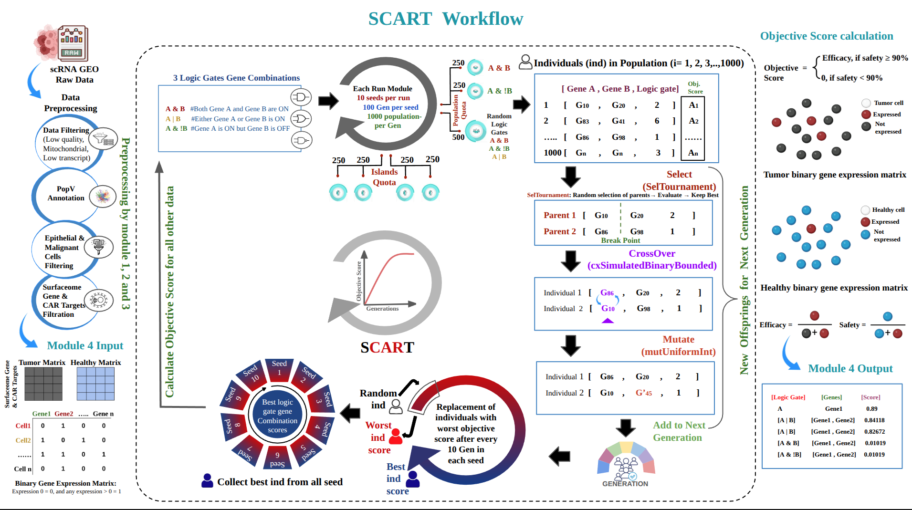

Logic Gates & Circuits
To systematically define two-gene combinations for CAR-T therapy target identification, SCART encodes gene expression parameters with Boolean logic gates. Each gene is labelled ON if its expression value is 1 (expressed) or OFF if its expression value is 0 (not expressed). The logical operators AND, OR, and NOT are then applied to generate all possible two-gene regulatory configurations.
The combination of two genes and three logic gates results in 3 unique logic gate gene combinations:
AND Gate
Both genes are ON. CAR-T activates only when both antigens are co-expressed on the same cell — the safest selectivity profile.
OR Gate
At least one gene is ON. CAR-T activates when either antigen is present, maximising tumour coverage.
NAND Gate
Gene A is ON and Gene B is OFF. Exploits loss-of-expression patterns unique to tumour cells.
Collectively, these logical configurations cover the full range of binary gene-expression relationships, providing the means to determine how distinct ON/OFF patterns can be leveraged for logic-based CAR-T target design.
Handling the NOT Gate (A &! B)
Python booleans are used to handle the ! NOT operation precisely. Consider the following worked example with A &! B:
import numpy as np A = np.array([1, 0, 1, 0]) B = np.array([0, 1, 1, 0]) # Step 1 — convert B to boolean B_bool = B.astype(bool) # [False, True, True, False] # Step 2 — apply bitwise NOT not_B = ~B_bool # [True, False, False, True] # Step 3 — convert back to int not_B_int = not_B.astype(int) # [1, 0, 0, 1] # Step 4 — apply AND result = A & not_B_int # [1, 0, 0, 0] # 1 = Gene A is ON and Gene B is OFF ✓
In the result, 1 means Gene A is ON and Gene B is OFF — exactly the condition required. This pipeline uses Boolean conversion and bitwise NOT operations to precisely execute the A &! B logic gate, empowering SCART to identify samples where Gene A is expressed and Gene B is absent.
Objective Score Calculation
The objective score evaluates the efficacy of targeting tumour cells while maintaining a predetermined safety threshold. Two metrics are computed for every logic gate + gene combination:
| Metric | Definition | Threshold |
|---|---|---|
| Efficacy | Fraction of tumour cells where the circuit evaluates to 1 (expressed). sum(1s) / total tumour cells |
Maximised |
| Safety | Fraction of healthy cells where the circuit evaluates to 0 (not expressed). sum(0s) / total healthy cells |
≥ 90% required |
Scoring rule: if the safety score is ≥ 90%, the efficacy score is used as the final objective score. If safety falls below 90%, the objective score is set to 0 — the combination is disqualified regardless of its tumour coverage.
[1, 0, 1, 1, 0, 1, 0, 1, 1, 1], the sum of 1s is 7 and the total is 10, giving an efficacy of 0.7 (70%). Safety is computed symmetrically using the count of 0s in the healthy cell array.Genetic Algorithm Overview
SCART uses a DEAP (Distributed Evolutionary Algorithms in Python, v1.4.3) genetic algorithm to search the space of two-gene + logic gate combinations. The algorithm mimics natural evolution — initialisation, selection, crossover, and mutation — to iteratively discover high-scoring CAR-T targets.

Key global parameters for one full SCART run:
| Parameter | Value | Description |
|---|---|---|
n_runs | 10 | Number of independent seeds (seed 42 → seed 51) |
Gmax | 100 | Max generations per seed (Gen 0 – Gen 99) |
pop_size | 1000 | Individuals per generation |
patience | 50 | Early stopping: terminate seed if no improvement for 50 consecutive generations |
Initialization of Individuals
Each individual (ind) encodes a single two-gene + logic gate candidate in the format:
ind = [GA, GB, LogicGate] GA — index of Gene A in the binary expression matrix GB — index of Gene B in the binary expression matrix LogicGate — index of the logic gate (0 = A&B, 1 = A|B, 2 = A&!B) Example: [10, 32, 2] → gene index 10 AND NOT gene index 32
In the first generation, 1000 individuals are randomly generated. Gene A and Gene B indices are drawn uniformly from the available genes in the expression binary matrix; the logic gate index is drawn uniformly from {0, 1, 2}. Each randomly assigned pair is then evaluated by the objective score function.
Population Quota
Without intervention, the OR gate dominates the genetic algorithm because A | B almost always achieves higher raw tumour coverage than AND or NAND. This dominance suppresses rare but potentially valuable NAND combinations. SCART resolves this with a population quota:
| Partition | Gate | Reserved slots |
|---|---|---|
| Part 1 | A & B | 250 (25%) |
| Part 2 | A | B | 250 (25%) |
| Part 3 (open) | All gates | 500 (50%) |
The 20% floor for AND and NAND does not rigidly preserve the 250 / 250 / 500 split — it only guarantees that no gate type completely disappears from the population. This allows OR gate dominance to occur naturally in the open partition while still giving rare gate combinations equal representation.
Islands & Ring Migration
Even with a large population, genetic algorithms can miss rare gene combinations in a high-dimensional gene space. SCART introduces an island model to improve gene coverage:
- The 1000-individual population is divided into 4 islands of 250 each.
- Each island receives a different quarter of the tumour expression matrix.
- Islands are partitioned once at the start of each seed.
Each island is biased toward different logic gates to prevent any single gate from dominating within an island:
| Island | AND quota | NAND quota | Open quota | Bias |
|---|---|---|---|---|
| Island 0 | 125 | 62 | 63 | AND-heavy |
| Island 1 | 62 | 125 | 63 | NAND-heavy |
| Island 2 | 32 | 32 | 186 | Open |
| Island 3 | 31 | 31 | 188 | Open |
Ring migration maintains diversity between islands. Every 10 generations, the top 10 individuals from each island are transferred to the next island in a ring:
Migration direction (top 10 transferred): Island 0 → Island 1 → Island 2 → Island 3 → Island 0
Selection & Crossover
-
Tournament Selection (
selTournament, tournsize = 2)Two individuals are randomly drawn from the current population. The one with the higher objective score is selected as a parent. This process is repeated twice to obtain two independent parents for crossover. Uses Python's
random()function. -
Simulated Binary Bounded Crossover (
cxSimulatedBinaryBounded, cxpb = 0.5)The two selected parents undergo crossover with probability cxpb = 0.5. Random breakpoints are assigned in the individual circuits and gene segments are exchanged, producing two new offspring. Uses Python's
randint()function.
Mutation & Generational Gap (Ggap)
Mutation
The mutUniformInt DEAP operator introduces genetic variance. Each gene index in an offspring can be randomly replaced with a new index drawn from the full gene list with probability mutpb = 0.2. This mimics natural point mutations and prevents premature convergence.
Generational Gap (Ggap)
To maintain genetic diversity across generations, SCART introduces a generational replacement step every Ggap = 10 generations:
- All individuals in the population are ranked by efficacy score in descending order.
- The bottom Rrep = 10% (100 individuals) are replaced with freshly randomised individuals.
- This prevents the population from becoming entirely composed of near-identical high-scoring clones.
Hall of Fame & Final Output
At the end of each seed, the best-scoring individual is recorded. After all 10 seeds complete, the top candidates from every seed — the Hall of Fame (hof) — are merged and ranked in descending order by efficacy score with the constraint that safety ≥ 90%.
Both output files contain the following columns:
| Column | Description |
|---|---|
Seed | Which random seed (42–51) produced this candidate |
Generation | Generation number within that seed |
LogicGate | Gate type: A & B, A | B, or A &! B |
GeneA / GeneB | Gene names for the two-gene combination |
Efficacy | Fraction of tumour cells targeted (0 – 1) |
Safety | Fraction of healthy cells spared (0 – 1) |
two_gene_hof.csv file contains the best candidates shortlisted across all seeds. The two_gene_complete.csv file contains every evaluated individual across every generation and run, useful for post-hoc analysis.GA Parameters Reference
| Parameter | Default | Description |
|---|---|---|
pop_size | 1000 | Number of individuals per generation |
Gmax | 100 | Maximum generations per seed |
patience | 50 | Early stopping threshold (generations without improvement) |
n_runs | 10 | Number of independent seeds (seed 42 to seed 51) |
n_cpus | 1 | CPU cores for parallel evaluation |
safety_threshold | 0.9 | Minimum safety score for a combination to be shortlisted |
cxpb | 0.5 | Crossover probability |
mutpb | 0.2 | Mutation probability per gene |
Ggap | 10 | Generations between diversity replacement steps |
Rrep | 0.1 | Replacement rate (10% of worst individuals replaced every Ggap) |
tournsize | 2 | Tournament size for parent selection |
| Islands | 4 | Number of sub-populations (250 individuals each) |
| Ring migration interval | 10 generations | Frequency of top-10 individual exchange between islands |